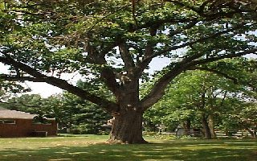

Kirsten Zahn

Bucyrus' Biggest Oak
"This is a fine example of an English Oak Tree, or in Latin terms, Quercus
Robur. It measures 20 feet in circumference and has a diameter of 7 feet. It is
growing in the side yard of my family's property in Bucyrus, Ohio. It is the
biggest tree I have ever seen and it is the largest in our surrounding area.
One fact that I learned last evening from a local historian was that the first
owners of our home had a very interesting ritual with the tree. When I a
family member died, they took the blood from their body and poured it around
the base of the tree. Now if this is true I don’t know, but I thought it was
an interesting piece of local folklore. I hope you all like this tree as much
as I do. I have grown up around and played in and have some great personal
memories of my own.
-Kirsten Zahn
© Kirsten Zahn
"Bucyrus' Largest Tree"
Computer Graphics
Common Name: English Oak
Latin Name: Quercus Robur
Circumference: 13 feet
Location: Bucyrus, Ohio USA
 Return to Main
Page
Return to Main
Page
Comments
Please send e-mail to: June Julian jj68@nyu.edu